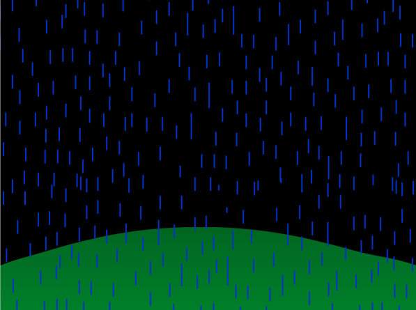

Home > Projects > Scratch > It was a dark and stormy night...
by Google CS First
License: CC-BY-SA 4.0
In this project you will create a story set on a dark and stormy night. You will learn how to create animated rain and lightning.

Start by downloading and opening the starter project in Scratch.
Download the starter project.
Open the project in Scratch.
In this step, you will program the rain sprite to repeat moving from the top of the screen to the bottom. This will make it look like it's raining in your story.
First, we will set a starting position for the rain and make it move down to look like falling rain.
motion menu, drag out the following block:go to x: [] y: []
The top of the stage is Y = 180. This is where we want the rain to start. Enter 180 for the Y value of the go to x y block.
Click on the block to test your program. What happens?
We need to make the rain sprite glide down so that it looks like rain is falling. Drag out the following block and attach it to the go to x y block:
glide [] secs to x: [] y: []
The bottom of the stage is Y = -180. Enter -180 into the Y spot of the glide block.
Click on the blocks to test your program. What happens?
We want the rain to continue falling forever. Can you find the right block to do this?
Experiment with your program. Try changing the seconds value in the glide block. What effect does this have on the rain?
Finally, add an easy way to start your program. Drag out the following block and connect it at the top of your program:
when green flag clicked
Please show your teacher or supervisor your program before moving on to the next step.
In this step, you will make lightning occur by changing the backdrop.
So far, we have only created code for a sprite. In this step, we will program the stage.
Select the stage. You can program a stage to do almost everything a sprite can do, except move.
Look in the backdrops tab. You should see two backdrops: one for the night sky, and one that's bright like lightning.
Try clicking quickly between the two backdrops. We will program the computer to make this flash happen automatically.
Drag out the following block:
next backdrop
Click the block to test your program. What happens?
Like the last step, we want this block to repeat but this time we only want the lightning to flash a few times, not forever. Drag out the following block:
repeat [10]
Click on the blocks to test your program. What happens?
If you wish to change the speed of the lightning, drag out the following block and connect it to the next backdrop block. Set its value to a really small number such as .1 or .01:
wait [] secs
Experiment with your program. Try changing the number in the repeat block. What happens if you enter an odd number?
To make sure that the stage always starts with the night sky add the following block at the top of the stack:
switch backdrop to [Night Sky]
when green flag clicked
Please show your teacher or supervisor your program before moving on to the next step.
In this step, you will make the lightning strike at random times throughout the story.
In the previous step, we programmed lightning to flash. Lightning isn't predictable and it doesn't flash on command. In this step, we will program the lightning to randomly flash throughout your story.
Place a forever block around the repeat block. This should make the lightning repeat for the entire story.
Click the green flag to test your program. What happens?
Too much lightning! To add a break, add a wait block before the repeat block. Your program should look similar to this:
when green flag clicked
switch backdrop to [Night Sky]
forever
wait [4] secs
repeat [10]
next backdrop
wait [0.01] secs
Test your program. What happens now?
In nature, lightning does not strike in a pattern. Sometimes there might be 1 second between strikes, other times the interval may be much longer. To make your story setting more realistic, make the computer wait a random amount of time between lightning strikes. Add the following block inside the top wait block:
pick random [] to []
Please show your teacher or supervisor your program before moving on to the next step.
Now it's time to get creative! What kind of story will you create in this setting? What kind of characters would be out in this storm? Why are they there? Are they lost or trying to get home? Has something bad happened or is something bad about to happen? Use your imagination and get creative!
When you are finished, share your creation in the Scratch Project Gallery!
I'm done!